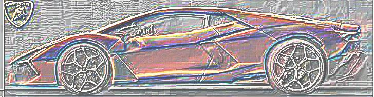
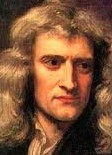

Fun With Filters and Frequencies
CS 180 Project 2 Fall 2024
Aaron Zheng
Fun with Filters
Finite Difference Operators
In this part, we need to try to find edges and gradients along the image that is provided to us, specifically the camera image. We will be using the finite difference filter, as shown below.

Dx is responsible for subtracting adjacent columns, while Dy is responsible for subtracting adjacent rows. In this way, we can find gradients in the image by applying these filters, as these images will have high intensity at positions where the image changes magnitude very abruptly in x or y.
The gradient magnitude is the square root of squares of the results of applying the filters (Dx, Dy) on the image. Using thresholding (ie, setting pixels below a certain threshold brightness value to zero), we can obtain a very clear contour / outline of the image, which is an edge image (tells us where the edges are).
Results
Dx |
Dy |
|
X Derivative |
Y Derivative |
|
X Derivative Equalized |
Y Derivative Equalized |
|
X Baselined with Threshold |

Y Baselined with Threshold |
Final Results
|
Equalized Gradient Magnitude Image |
Threseholded Gradient Magnitude |
Derivative of Gaussian (DoG) Filters
Since these images are rather noisy, we want to smooth the image with a Gaussian filter before convolution. This way, there will be less noise, as the Gaussian filter will remove the noise, which are typically very high frequency. So we apply the gaussian filter and then calculate the derivative through the derivative filters. This result is shown below.
Results
Dx |
Dy |
|
X Derivative |
Y Derivative |
|
X Derivative Equalized |
Y Derivative Equalized |
Final Results
|
Equalized Gradient Magnitude Image |
Threseholded Gradient Magnitude |
Another way we could get the same (edge image) result, is by applying the derivative filter directly on the gaussian. This result is shown below.
Comparison between convolving twice and convolving once
|
Blurring then taking Derivative |

Applying Derivative Kernel on Gaussian |
We see that, other than some very minor smoothening on the left edge of the cameraman (his back), there are no noticeaeble differences between the two images above. We can say that they are very similar, which is to be expected. However, the right image does appear more smooth, which may be a result of losing information from the blurring process.
Fun with Frequencies
Sharpening an Image
Motivation
Sometimes in life, we may be limited by technologies or other factors out of our control, but we still want to make our images look sharper. How will we do that? In this section, I will try to tackle this problem. The way I will make images look sharper is by artificially scaling up the intensities of higher frequencies in the image, making them look more pronounced.
Approach
I will use a low-pass filter to get a blurred version of the image. Then, I subtract the original image by the blurred version of the image to get the detail image, the image that contains high-frequencies in the original image. The result image is then created as the original image, added to the detail image multiplied by a certain alpha.
In a sense, we are highlighting the stronger intensities of the image by a certain factor which is noted by alpha
Since images get darker as I overhighlight high frequencies and then normalize, I will display equalized images for all the results shown below.
Taj Mahal
|
Original Taj |
Taj Sharpened, alpha=1 |
Taj Sharpened, alpha=5 |
I found a nice image online with a cute dog, but it is blurry. So I tried to sharpen it. Here are my results.
Image of dog, sharpened and not sharpened
|
Original Dog |
High Frequencies of the Doggie |
|
Dog Sharpened, alpha=5 |
Dog Sharpened, alpha=10 |
We also can compare the results between the original version of images, and the images that are blurred then sharpened.
The doggo is much clearer now! Clearly from these results, we see that a higher alpha does indeed make the blurry image look (artificially) sharper. Now, I will try this for a image that is not blurry, and see how, by blurring it and sharpening from the blur, I can obtain a similar image.
Below is results for a tree image.
|
Original Tree |
Blurred Tree |
|
Tree Sharpened, alpha=1 |
Tree Sharpened, alpha=5 |
From this, we see that the sharpening does indeed make the image much clearer, although it cannot replace or make up for lost information in the tree.
Hybrid Images
Approach
Here, we want to generate images that look a certain way at a distance, but then a different way when seen close to our eyes. To accomplish this effect, I took advantage of the principle that higher frequencies in an image are much more noticeable to the human eye than lower frequencies, but they are not noticeable at a distance (i.e. at lower resolutions).
I used a low pass filter on the first image by convolving the lo_image with a gaussian that
has gaussian_kernel as filter kernel size, and sigma as the standard deviation.
Then I blurred the second image (hi_image) by applying convolution with the same convolution parameters,
and subtracted the original image from the blurred image to get the high-passed image. Once this is done,
I overlayed the low-pass image of lo_image and the high-pass image of hi_image to get the result.
Bells and Whistles:
For this part, I attempted to use equalization(balancing out the intensities) to make the images look better. After testing, I see that it looks much better with color on both images, than grayscale on one image vs color on the other. I also found it beneficial to reduce the intensities of colors on the low-passed image, relative to the high-passed image, as the high-pass image tends to have lower color intensities, which doesn't really blend well with the low passed image.
Since coloured images looks much better than uncolored (gray) images, all the results below will be using coloured images (Equalized images)
Cat and Person
|
Original Cat |
Original Person |
Result (after align + overlaying) |
Some other examples of images I tried are below.
Nezuko Kamado and Mitsuri Kanroji (demon slayer)
|
Kanroji |
Nezuko |
Result (after align + overlaying) |
Tanjiro Kamado and Giyu Tomioka (demon slayer)
|
Tanjiro |
Giyu |
Result (after align + overlaying)
Ferrari and Lamborghini
|
Ferrari |
Lamborghini |
Result (after align + overlaying)

Fourier Transform
By eye, I believe that the best results were the Cat and Person. The fourier transformed results are as follows:
Frequencies of Results
|
Original Person Frequencies |
Original Cat Frequencies |
|
High Pass Frequencies of Person |
Low Pass Frequencies of Cat |
Result of the hybrid image
Gaussian and Laplacian Stacks
Approach:
To create the Gaussian stack, we blur the input images sequentially, with each subsequent image being the blur applied on the previous image. To create the Laplacian stack, we subtract consecutive images in the Gaussian stack. For the final image in the Laplacian stack, we use the last (most blurred image) in the gaussian stack. Here are the results(normalized Laplace images) when applied on the apple and the orange images.
Apples
First row: The gaussian stack
Second row: The normalized laplacian stack
Thrid row: The equalized laplacian stack
→ Increasing in level
Oranges
First row: The gaussian stack
Second row: The normalized laplacian stack
Thrid row: The equalized laplacian stack
→ Increasing in level
Multiresolution Blending
Approach:
To generate hybrid images, we need two images of the same shape, as well as a mask matrix in the same shape, showing the boundaries between the two images. The mask matrix should have some pixels in some region at the brightest value, and others at the darkest value.
Then we generate Laplacian stacks for both input images, and generate a Gaussian stack for the mask matrix as well. Then, we pairwise multiply:
1) Laplacian stack of image 1 with the Gaussian stack of the mask
2) Laplacian stack of image 2 with (1- Gaussian stack of the mask)
and sum the results together.
Here are some of the results.
Apple and Orange

Original Apple |

Original Orange |
Original Mask |
The Oraple
Einstein and Newton
|
Original Einstein |

Original Newton |
Original Mask |
The Einnewton
Aaron and a Meteor
|
Original Aaron |
Original Meteor |
Custom Mask |
Aaron and the Meteor
The Aaron and the Meteor image is a bit of a fail, since the image is blurry. I believe this has something to do with the difference in color hues of the two images.
Below are the laplacian stacks of the images above.
Laplacian Stacks of Images
Laplacian - Aaron

Laplacian - Meteor
Laplacian - Einstein
Laplacian - Newton
Reflection
This project was very challenging and fun, and I learnt a lot about how important frequencies are to images, and how manipulating them can change / alter the ways in which an image looks. We can achieve so much through maniplating frequencies of an image, including combining images, sharpening them, and overlaying them in a hybrid way.